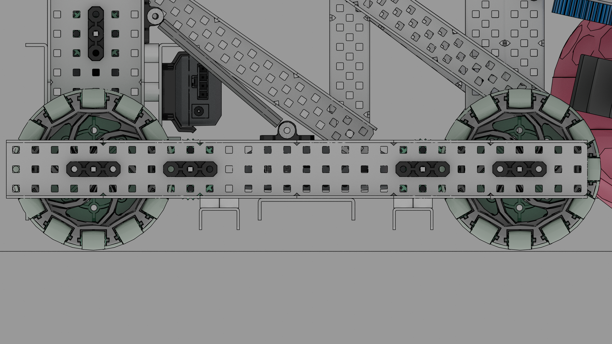
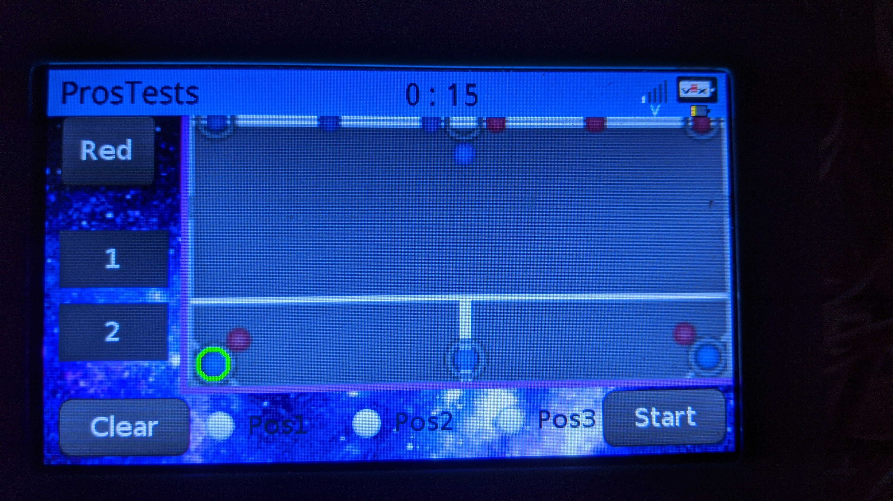

May Progress Entries¶
5/4/20¶
Attendance: ☐ Brody, ☑ Derek, ☐ Dylan, ☐ Ian, ☐ Jack¶
Today we changed the mecanum drive base cad to have omni wheels similar to the second drive base we had. We did this because the other drive base with omni wheels was having complications with adding the intakes and tray. When we added the omni wheels where the mecanum were, we could make the drive base less wide by 4 holes. Our two other inertial sensors came in today so we were able to test and begin understanding 7K’s odometry better. They use 3 different inertial sensors, one for the left set of wheels, one for the right set of wheels, and then a 3rd as backup. Now that we have 3 inertial sensors we will be able to continue understanding 7k’s odometry and begin writing our own odometry and try to improve upon their odometry.
New Omni Drive Base¶

5/15/20¶
Attendance: ☐ Brody, ☐ Derek, ☐ Dylan, ☐ Ian, ☑ Jack¶
We began creating the GUI for our robot. We will have multiple pages, Auton selection, Sensor values, and a reset page. The Auton selection page will have a 3x3 grid of buttons that resemble the goals on the field. The idea behind it is that depending on our teammate and game plan we will choose exactly which goals we want to score in during the pre auton. Then to the left we will have two buttons for our most common autonomous runs, and a drop down above them to choose which side we are on either Blue or Red. Underneath all of that we will have a clear button in case when choosing the goals we click the wrong one and a start button which will start the auton. In between these two buttons we will have little boxes that light up to show the progress of how many goals we checked. To create all of this we used LVGL. We created a button matrix for the 9 goals, a drop down object for the drop down menu, 4 button objects for the preset autons, and the clear and start buttons, and finally 3 checkbox objects for the progress bar. We also discussed how we will do movements autonomously. We know that we want to move the robot on arc paths but currently do not know how to implement this, so further research on how to implement arc paths is needed. Below there is a photo of our current GUI. Below that are the current member functions in the Display class. These functions are what we run during the initalize phase to load the GUI and select things such as the autonomous routine.

class Display{
public:
/*
Initializes the GUI and sets up Screen and Tabs.
*/
Display& display();
/*
Changes background based on Preset DropDown.
*/
Display& backgroundcheck();
/*
Creates circles around selected goals.
*/
Display& arcchecker();
};
5/16/20¶
Attendance: ☐ Brody, ☐ Derek, ☐ Dylan, ☐ Ian, ☑ Jack¶
We wanted to improve the GUI by making it cleaner and have a nice background. Our background now is a galaxy background behind the buttons and then a picture of the field for the auton 3x3 grid. The matrix we had yesterday was made invisible and the buttons moved to positions of each goal according to the picture. The picture of the field also changes based on whether the drop down menu is selected as Red or Blue. When you select one of the goals in the 3x3 it draws a green circle around that goal so it’s easy to see which ones have been selected.
5/31/20¶
Attendance: ☐ Brody, ☐ Derek, ☐ Dylan, ☐ Ian, ☑ Jack¶
Because of how important the autonomous phase is now, with the extra win point as well as the fact people are already maxing out the driver skills score, We want to improve our code as much as possible. We are implementing PID, slew rate control, and Odometry into our code for driver and autonomous to improve the consistency. Currently we have a Chassis class, Slew class, and a Display class.(Chassis for drive base member functions, Slew for slew rate control member functions, and Display for LVGL GUI member functions.) The main two member functions of the Chassis class are drive and turn. The drive member function uses a PD (Proportional, and Derivative) loop that takes the average of the left and right tracking wheels to go to the given position, and uses slew rate control to accelerate up to max speed. The turn member function is similar to the drive member function in using a PD loop with slew rate control but instead of the tracking wheels we are using the average of three inertial sensors that face the North, East and West directions of the robot. We use the average of three because basing it on one will get more and more inaccurate over time whereas three sensors help mitigate that problem. We published our code to Github now.
Chassis& Chassis::drive(double target){
isSettled = false;
double averagePos = REncoder.get_value() + LEncoder.get_value()/2;
while(target != averagePos) {
double averagePos = REncoder.get_value() + LEncoder.get_value()/2;
double error = target - averagePos;
double prevError = error;
double derivative = error = prevError;
double power = error*kP_drive + derivative*kD_drive;
if (output <= power + rate_drive) {
output += rate_drive;
}else if(output >= power){
output -= rate_drive;
}
RF.move(-output);
RB.move(-output);
LF.move(output);
LB.move(output);
pros::delay(20);
if(averagePos < target+10 && averagePos > target-10) {
isSettled = true;
break;
}
}
return *this;
}